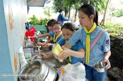
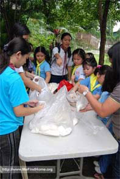
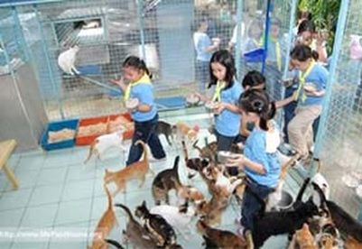
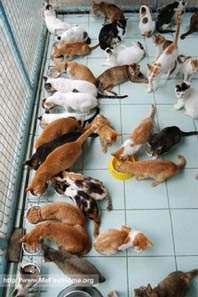

By Sherwin Castillo
reposted from www.mefindhome.org
Here's an idea about how we animal advocates can help alleviate the somewhat recurring problem of animal food shortages (especially cat food) at the shelter.
If you have some free time for volunteer work and are looking for something to do then why not participate in what we call the Shelter Feeding Program where we encourage people to visit the shelter to bring home-cooked food for the animals? It can be a great get-together activity for you, your friends and your family and would benefit the shelter cats and dogs in more ways than one:
What kind of cooked food to bring? Here's our recommendation (Don't worry there's no fancy cooking required):
Mix together
Mix together
Also please bring detergent/dishwashing soap and sponges. We highly recommend a little food-bowl-washing fun to make the experience complete! Food bowls are all cleaned before food is served.Bring a camera!!! :)
"FEEDING PROGRAMS ARE HELD ONLY IN THE AFTERNOONS. Shelter animals are fed twice a day and the first feeding is done by the PAWS caretakers very early in the morning.
As no staff member will be around to assist feeding groups in the morning, feeding programs are generally held in the afternoon.
Groups for the regular afternoon feeding should be at PAWS no later than 2:00pm so that the animals can be fed promptly at 4:00 to 4:30pm. Preparation and clean-up time (before and after feeding) takes a minimum of one hour.
Feeding should be for BOTH cats and dogs and for the full amount of food specified. If the group cannot afford to shoulder expenses of feeding both cats and dogs, they can do CLEANING PROGRAM instead (see separate link for Cleaning Program)
|

Students from the Chiang Kai-Shek School volunteer for the Shelter Food Program (September 2008). Here they are washing food bowls! I took this picture and I tell you these kids are some of the most efficient bowl-washers I've seen in a long time. They went to the shelter and they meant business! | |
|

Here they are preparing the food. They brought rice which they mixed up with some nicely boiled ground meat! A sure treat for the shelter kitties! Yumyum! |
The kiddies on their way to the cattery with PAWS Humane Education Program Director Anna Cabrera.
The kitties, sensing the coming visitors and the treats they bring, scramble the welcoming committee, which, basically, is just all of them rushing to the cattery entrance.
|

Food is served. Check out that one cat standing on her hind legs hoping to get first dibs. |
|

If you wish to do this little feeding project, pleasecoordinate with PAWS about it. The PAWS shelter is currently running on a (very) skeletal volunteer work force and the schedule of the volunteers who must be there to supervise your feeding project needs to be arranged. Email philpaws@ paws.org.ph or call 475-1688 to arrange a nice afternoon with the shelter cats and dogs. Our past calls for cat food donations have always been answered by kind donors. And though I'm unable to mention all your names here except for Matthew (The 10-year old cat-lover who broke his piggy bank and spent all his savings to donate 30 kg. of cat food), please know that your help means a lot to the animals and not only do they nourish the animals but also continue to inspire and fuel the spirits of other PAWS volunteers and advocates like you. |
Comic book presentation of Phinma visit to PAWS on September 5, 2009
made by Marie I. Gonzales